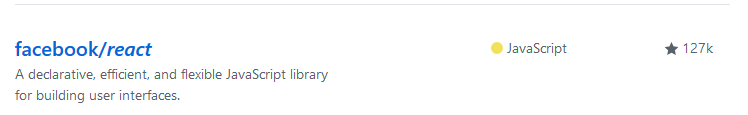
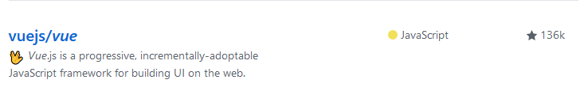

这个世界唯一不变的可能就是变化，历史的车轮滚滚向前，它不会因任何人的消极缓慢而停止。时代抛弃你时，连一声再见都不会说。
从最开始的Javascrpit、到后来的Jquery、（ExtJs、EasyUI、MiniUI）、Bootstrap、Layui，再到如今的mvvm框架（Vue.js、Angular.js、React.js），整个前端的发展趋势一直在改变。
就拿Jquery来说，在Dom操作领域无疑是一代霸主，它击败了所有Dom领域的竞争对手，却输给了时代，mvvm框架的出现，让它顿时黯然失色。
这不由得让我想起大润发。大润发创始人离职时说：战胜了所有对手，却输给了时代。大润发在零售行业是一个号称19年不关一家店的传奇商场。在商场这个领域里，没有任何人能打败它，包括沃尔玛/家乐福，但是很可惜他败给了这个时代，被阿里巴巴收购，高层集体走人。
据说在程序员界有那么一条鄙视链：每一个程序员应该都听说过程序员鄙视链，做c的看不起做c++的，做c++看不起做java的，做java看不起做.net的，然后这些人都看不起搞PHP或前端的，可以说，前端程序员应该处于程序员鄙视链的底端。如果你看了以上这些惨绝人寰的鄙视链之后，仍然没有击倒你想要做程序员的心，那我必须提醒你一件最重要的事：先去交一个女朋友，再来学写程序；因为一旦你成为软件工程师之后，就交不到女朋友了。
早期的前端俗称美工、切图仔，每天的工作就是切图、写写html、写写css。如今前端变得越来越重，早已不复当年，各种新技术日新月异、层出不穷，前端要学的东西太多，其学习的难度丝毫不低于后端。
最近这几年，前端的发展实在太快。Node.js的出现，更是将前端的发展提升到了一个新的境界。Node.js开启了前端模块化、组件化的进程，新技术层出不穷，各种mvc、mvvm框架也流行了起来。
网站交互有两种常用的方式：
由多页面组成的站点，我们称之为多页应用，由单页面组成的站点称之为单页应用。
在过去，许多Web后台常用UI框架，如ExtJs、EasyUI等等，通过iframe来嵌套页面，表面上看起来像单页应用，其本质其实依旧是多页应用。
每一次页面跳转的时候，后台服务器都会给返回一个新的html文档，这种类型的网站也就是多页网站，也叫做多页应用。
多页应用以服务端为主导，前后端混合。例如：.php文件、aspx文件、jsp文件。
特点：
为什么多页应用的首屏时间快？
首屏时间叫做页面首个屏幕的内容展现的时间，当我们访问页面的时候，服务器返回一个html，页面就会展示出来，这个过程只经历了一个HTTP请求，所以页面展示的速度非常快。
为什么搜索引擎优化效果好（SEO）？
搜索引擎在做网页排名的时候，要根据网页内容才能给网页权重，来进行网页的排名。搜索引擎是可以识别html内容的，而我们每个页面所有的内容都放在Html中，所以这种多页应用，seo排名效果好。
为什么切换慢？
因为每次跳转都需要发出一个http请求，如果网络比较慢，在页面之间来回跳转时，就会发现明显的卡顿。
单页Web应用（single page web application），简称SPA，就是只有一张Web页面的应用，是加载单个HTML 页面并在用户与应用程序交互时动态更新该页面的Web应用程序。
单页应用程序 (SPA) 是加载单个HTML 页面并在用户与应用程序交互时动态更新该页面的Web应用程序。浏览器一开始会加载必需的HTML、CSS和JavaScript，所有的操作都在这张页面上完成，都由JavaScript来控制。
单页应用开发技术复杂，所以诞生了一堆的开发框架：Angular.js、Vue.js、React.js。
单页应用，前后端分离，各司其职，服务端只处理数据，前端只处理页面（两者通过接口来交互）。
单页应用的优点
单页应用的缺点
表1.1-单页应用和多页应用对比
|
比较点 |
多页应用模式MPA |
单页应用模式SPA |
|
应用构成 |
由多个完整页面构成 |
一个外壳页面和多个页面片段构成 |
|
跳转方式 |
页面之间的跳转是从一个页面跳转到另一个页面 |
页面片段之间的跳转是把一个页面片段删除或隐藏，加载另一个页面片段并显示出来。这是片段之间的模拟跳转，并没有开壳页面 |
|
跳转后公共资源是否重新加载 |
是 |
否 |
|
URL模式 |
||
|
用户体验 |
页面间切换加载慢，不流畅，用户体验差，特别是在移动设备上 |
页面片段间的切换快，用户体验好，包括在移动设备上 |
|
能否实现转场动画 |
无法实现 |
容易实现（手机app动效） |
|
页面间传递数据 |
依赖URL、cookie或者localstorage，实现麻烦 |
因为在一个页面内，页面间传递数据很容易实现 |
|
搜索引擎优化（SEO） |
可以直接做 |
需要单独方案做，有点麻烦 |
|
特别适用的范围 |
需要对搜索引擎友好的网站 需要兼顾低版本浏览器的网站 |
对体验要求高的应用，特别是移动应用。 管理系统 |
|
开发难度 |
低一些，框架选择容易 |
高一些，需要专门的框架来降低这种模式的开发难度 |
|
CSS和JS文件加载 |
每个页面都需要加载自己的CSS和JS文件 |
整个项目的CSS和JS文件只需要加载一次 |
|
页面Dom加载 |
浏览器需要不停的创建完整的DOM树，删除完整的DOM树 |
浏览器只需要创建一个完整的DOM树，此后的伪页面切换其实只是在换某个div中的内容 |
|
页面请求 |
所有页面请求都是同步的——客户端在等待服务器给相应的时候，浏览器中一片空白 |
所有的“伪页面请求”都是异步请求——客户端在等待下一个页面片段到来时，仍可以显示前一个页面内容——浏览器体验更好 |
|
HTML页面数 |
项目中有多个完整的HTML页面 |
整个项目中只有一个完整的HTML页面；其他HTML文件都是HTML片段。 |
说明：现在除了一些电商网站，其实已经很少有系统需要去兼容低版本的浏览器，大部分是IE9以上的浏览器。而用户想要拥有更好的上网操作体验，就不得不选择高版本的浏览器。如果不需要考虑SEO的项目，建议采用单页应用的开发方式，因为这样可以前后端完全分离，提高开发效率，用户体验只是其次。
前端端分离的开发模式基本流程通常如下：
前后端分离的开发方式，无论是多页应用还是单页应用都可以采用，但是多页应用采用前后端分离模式的情况通常比较少。
前端的主要工作是什么？主要负责MVC中的V这一层；主要工作就是和界面打交道，来制作前端页面效果；
单页应用开发其实是比较复杂的，需要一定的技术支撑。所以一些前端框架应运而生。
Vue.js和Angular.js、React.js 一起，并成为前端三大主流框架。
Angular
React
Vue
前端三大主流框架各有千秋，对于规模不大的前端项目来说，Vue 因其极易上手会被列出首选之位，而Angular 在快速开发大型 Web 项目上很受推崇，但仍存诸多缺陷，React则为 JavaScript 应用开发者提供新的开发方式。
如果硬是要给这三大框架一个排名，目前排名是React、Vue、Angular。从目前国内的整体行情看，一些中小企业，更青睐于Vue。作为一名开发者，我们无需纠结哪个更好，对我们而言，不同的框架或者不同的语言，它们都只是一个工具而已，是我们解决问题的工具。
Vue.js 是目前最火的一个前端框架，而React是最流行的一个前端框架（React除了开发网站，还可以开发手机App， 当然Vue同样也可以用于进行手机App开发，需要借助于Weex，而且没有React那么强大）。
Vue.js最火，表示想要学习的人员最多，React最流行，表示目前正在使用的人最多。而Angular 的流行度已呈现明显下滑趋势。甚至有人说：“对于 Angular 2，我想我永远不会再使用。 因为它带来的问题远远多于解决的问题。 它需要丰富的知识经验来构建大型应用程序，否则总是会遇到性能问题。
如今最火热的前端需求在于移动端，而不再是 Web 。React Native 非常成功，同时它也会带动 React.js 的发展。Vue.js目前 只在 Web 前端中占据主导地位，而不会统治所有的前端领域。React 则可以在所有的前端领域中盛行。这是为什么？
因为Vue.js 未能提供替代 React Native 的可行性方案（Weex 和 Quasar 太年轻，存在碎片化并且很脆弱），伴随着 React Native 和 React.js 的爆发式增长，如果你掌握了 Web 前端的 React 和 Redux ，你将获得极大优势：只要你想，便可在几周内熟练地将 React Native 应用到移动端。
而使用 Vue.js 编写 Web 的前端人员几周就能掌握 React Native，所以不管怎么说，学习Vue.js都是非常值得的。令人兴奋的是：”截止至目前为止，Vue在github上的start数已经超越了react，咱中国开发人员有着卓著的贡献，我非常看好Vue，也为咱中国人感到自豪！


mvvm框架能够帮助我们减少不必要的DOM操作；提高渲染效率；双向数据绑定的概念：通过框架提供的指令，我们前端程序员只需要关心数据的业务逻辑，不再关心DOM是如何渲染的了。
在Vue中，一个核心的概念，就是让用户不再操作DOM元素，从而解放用户的双手，让程序员可以有更多的时间去关注业务逻辑。
框架：是一套完整的解决方案；对项目的侵入性较大，项目如果需要更换框架，则需要重新架构整个项目。
框架举例：
库（插件）：提供某一个小功能，对项目的侵入性较小，如果某个库无法完成某些需求，可以很容易切换到其它库来实现需求。
例如：
https://baike.baidu.com/item/SPA/17536313?fr=aladdin
http://pixeljets.com/blog/vue-js-vs-react-what-to-expect-in-2018/
https://www.jianshu.com/p/bae4f6604549
https://www.cnblogs.com/teemor/p/8760950.html
https://www.jianshu.com/p/4c9c29967dd6
https://blog.csdn.net/qq_39579242/article/details/82703150